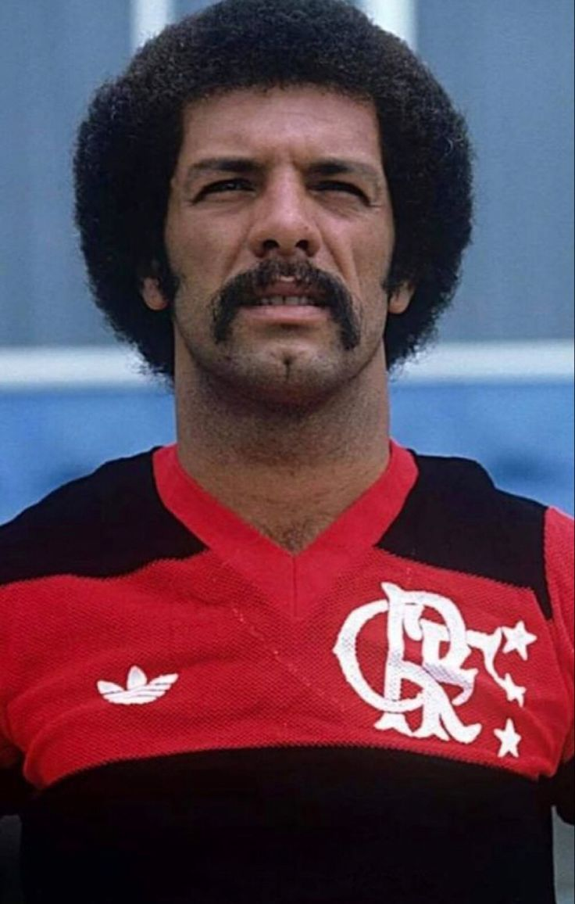
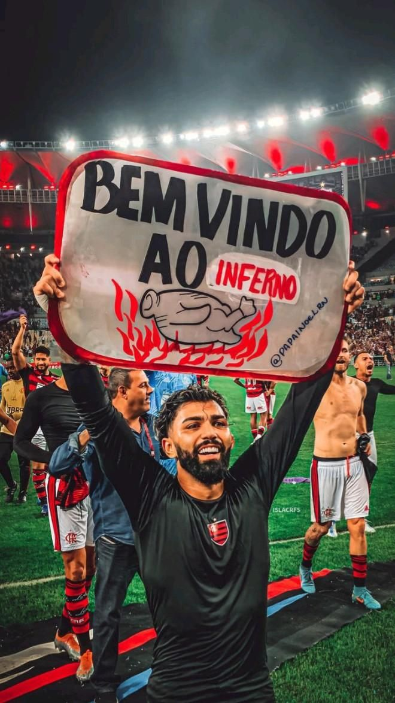
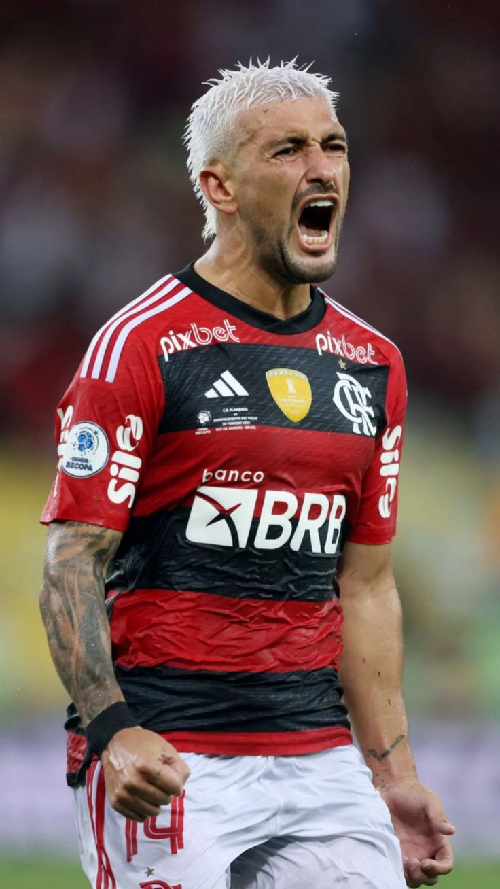

Arthur Antunes Coimbra (Rio de Janeiro, 3 de março de 1953), mais conhecido como Zico É considerado
por muitos especialistas, profissionais do esporte e, em especial, pelos torcedores do Flamengo,
o maior jogador da história do clube, e um dos maiores futebolistas brasileiros desde Pelé, tendo ganhado
a alcunha de Pelé Branco.
Leovegildo Lins Gama Júnior, também conhecido como Júnior, Maestro Júnior ou Júnior Capacete,
é um ex-futebolista e ex-treinador brasileiro que atuava como lateral-esquerdo. Fez fama atuando pelo
Flamengo, onde jogou 865 partidas, sendo o jogador que mais vezes vestiu a camisa rubro-negra. Pelas
contas do site Fla-Estatística, foram 876 jogos entre 6 de novembro de 1974, quando entrou no lugar de
Humberto Monteiro em um amistoso contra o Operário, e 19 de agosto de 1993, quando disputou dois amistosos
de 45 minutos cada contra Zaragoza e Internazionale. Júnior participou de 508 vitórias, 212 empates e 156
derrotas, marcando 78 gols.Em 2020, em um ranking elaborado por especialistas dos jornais O Globo e Extra,
figurou na 2ª posição entre os maiores ídolos de futebol da história do Clube de Regatas do Flamengo, atrás apenas do Zico.


Gabriel Barbosa Almeida, mais conhecido como Gabigol, Em 2019 foi emprestado ao Flamengo,
onde teve uma ótima temporada: foi campeão do Campeonato Carioca, levantou o título do
Campeonato Brasileiro sagrando-se artilheiro, com 25 gols, e ainda se destacou na Copa Libertadores,
onde marcou dois gols na final contra o River Plate, conquistando a competição e também foi artilheiro,
com 9 gols. O ano foi suficiente para se tornar um dos maiores ídolos da história do clube.
José Leandro de Souza Ferreira, mais conhecido apenas como Leandro, dedicou toda a sua carreira ao Flamengo, desde as categorias
de base, entre 1976 e 1978, até os últimos dias dela em 1990.
Rubro-negro de coração, foi um lateral-direito muito técnico, que apoiava bastante o ataque,
mas que também marcava atrás com eficiência. Participou da era gloriosa do Flamengo, que sob
o comando de Zico, conquistou no início dos anos 80 três Campeonatos Brasileiros, a Copa União,
a Copa Libertadores da América de 1981 e a Copa Intercontinental de 1981

Giorgian Daniel De Arrascaeta Benedetti, mais conhecido como arrascaeta, Foi contratado pelo Flamengo no
dia 8 de janeiro, numa negociação histórica. O valor negociado foi de 15 milhões de euros (R$ 63,7 milhões),
sendo, até então a transferência mais cara da história do futebol brasileiro. Arrascaeta foi
muito importante na virada que o Flamengo fez na final da libertadores, ao proporcionar o
passe que gerou o empate no final do segundo tempo onde 3 minutos depois ocorreu a virada e
o Flamengo se sagrou campeão